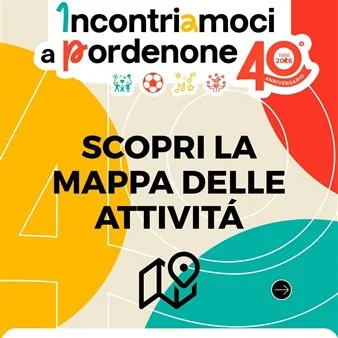

dom 18 ott
Incontriamoci a Pordenone
Una giornata da condividere con gli amici e tutta la famiglia! Domenica 18 ottobre torna per la 40esima edizione la manifestazione "Incontriamoci a Pordenone". Una giornata speciale dedicata a grandi e piccini, con tante attività, spettacoli, sport, mercatini e giochi per…
 Indicazioni
Indicazioni
- Costi e prenotazioni
- Costo non indicato · Prenotazione non indicata
- Programma
- Programma da verificare. Apri la fonte ufficiale per orari e possibili aggiornamenti.
- In caso di maltempo
- Nessuna indicazione specifica pubblicata.
- Note
- Acquisito automaticamente dalla fonte.
L’EVENTO
Descrizione completa
Una giornata da condividere con gli amici e tutta la famiglia!
Domenica 18 ottobre torna per la 40esima edizione la manifestazione "Incontriamoci a Pordenone". Una giornata speciale dedicata a grandi e piccini, con tante attività, spettacoli, sport, mercatini e giochi per trascorrere momenti indimenticabili con la famiglia e gli amici! Musica, animazione, VINYL OPEN AIR music & vintage, sport, esposizioni, spettacoli, negozi aperti... e l'imperdibile BAZAR DEI BAMBINI.
PIAZZA DELLA MOTTA, VIA DELLA MOTTA, VIA ROMA, PIAZZETTA PESCHERIA
BAZAR DEI BAMBINI (6 - 14 anni) – 40ª EDIZIONE!
Dalle ore 9.00 alle 18.00, i piccoli imprenditori saranno protagonisti con il loro mercatino: un’occasione unica per cimentarsi nel ruolo di venditori o per scoprire giochi e curiosità.
PIAZZA XX SETTEMBRE
Dalle 10:00 alle 18:00 ESPOSITORI DISCHI LP, 33/45 giri, mix, CD, DVD e cassette: edizioni da collezione, usato e nuovo.
Scopri vinili, rarità e pezzi unici: il paradiso per appassionati, collezionisti e curiosi.
MERCATINO DELL'ABITO USATO BENE
Dalle 10:00 alle 18:00 a cura di Wintage Advantage. Il grande mercatino dedicato alla moda sostenibile e all’economia circolare. Un viaggio nel tempo dagli anni ‘20 agli anni ‘90 per scovare abiti e accessori unici.
SPECIAL VINYL SESSION
Dalle 10:00 alle 18:00. I migliori dischi selezionati da dj storici del pordenonese! » Line up: Zellaby - The Pear - Lino Lodi - Stefano Mango - Mookie e insieme a loro, Special guest: JOE T VANNELLI
AREA FOOD e DRINK
Dalle 11:30 alle 18:00
Street food & specialità gourmet by
BRUS: smash burger, panino col pastin e fritti
MACELLERIA VICENZUTTO con specialità l'involtino Pordenone e le polpette al sugo
DOLCI e FRITTELLE
Drink corner by kilometrozero e Botanico bistrot
ACROBATIC DANCER Show di danza acrobatica ed equilibrismo
EXPO E LABORATORIO BONSAI dalle 9.00 alle 18:00 a cura degli esperti dell’Associazione Hikari Bonsai
CASTAGNE FUMANTI dalle 9.00 alle 18:00
TRUCCABIMBI dalle 10.00 alle 16:00
GIOCHI DI UNA VOLTA dalle 9.00 alle 18:00
Un’area dedicata ai passatempi della tradizione, tra legno, fantasia e sorrisi.
LABORATORIO DELLE API - Attività didattiche con le api nella teca e assaggi sensoriali dei vari tipi di miele. A cura di Apicoltura Zanini.
EXPO AUTO MODERNE
Dalle 9.00 alle 18:00 le ultime novità a quattro ruote, in collaborazione con Carraro e Nice’s Car.
Piazza XX Settembre e Via Mazzini
VIA MAZZINI
Ore 11.00
ESIBIZIONE DI ACROBATICA AEREA a cura di Desideria Danza Aerea
ARTIGIANATO CLAUTANO dalle ore 9.00 alle 18:00
Oggettistica in legno, tipica della Valcellina
STAND MEDIOLANUM
PIAZZETTA CAVOUR
CAMPETTO DA CALCIO by Pordenone FC
Dalle 9.00 alle 18:00 un’area sportiva per divertirsi insieme ai Ramarri.
MUSICA CON DJ SET by kilometrozero
Dalle 9.00 alle 18:00 dj set by dj Davide Zanetti
ATELIER ESPERIENZIALE a cura di Nascere Alberi. Un’esperienza ludico-educativa e sensoriale per bambini e famiglie.
CORSO VITTORIO EMANUELE
IL RACCONTASTORIE E I SUOI LIBRI GIGANTI - Show per bambini con libri giganti, kamishibai e strumenti musicali.
ASSOCIAZIONI DEL TERRITORIO dalle 9.00 alle 18:00
CORSO GARIBALDI
EXPO AUTO STORICHE dalle 9.00 alle 18:00
SPETTACOLO CON LUCA REGINA SHOWMAN ore 16.00
Preparati a essere conquistato da Luca Regina showman, un artista completo che saprà stupire con le sue abilità di mago, giocoliere e clown.
LA BICICLETTA DEL GUSTO - zona food dalle 9.00 alle 18:00
POMPIEROPOLI dalle 9.00 alle 18:00
Vieni a prendere il tuo gadget!
PIAZZETTA PESCHERIA
SCIARE A PORDENONE
Dalle 9.00 alle 18:00 pista da sci sintetica dove bambini e ragazzi potranno provare gratuitamente l’esperienza dello sci. A cura di ASD Montagna Wiva.
PIAZZETTA CALDERARI
PICCOLI AL VOLANTE dalle 9.00 alle 18:00
Una vera scuola guida per bambini a bordo di piccole auto, in collaborazione con Sport Show Treviso.
VIE DEL CENTRO
Animazione itinerante con:
TRENINO
SHOW DI BOLLE DI SAPONE
MASCOTTE GIGANTI
Informazioni: 0434 549411 / info@confcom.pn.it
IL PROGRAMMA
Programma e orari
Appuntamenti raccolti dalle fonti elencate. Dove manca un orario, non è ancora disponibile in questa scheda.
Programma pubblicato
- Ore 11.00
INFORMAZIONI UTILI
Prima di partire
- Controllare la fonte prima di partire.
ORGANIZZAZIONE